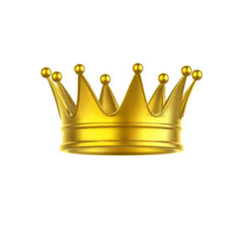

Many athletes have played in the NBA, but no of them were quite like Lebron James. Lebron James at the age of 14 was destined for stardum. He was already being annoited the chosen, or the next greatest player to play in the NBA since Micheal Jordan before he was even of age to drive. He grew op in Akron, Ohio in a single parent home and throughout all the dangers he was able to avoid each one and make it to the NBA. There he lived up to the extremely high expectations set on him when he first turned a teenager.